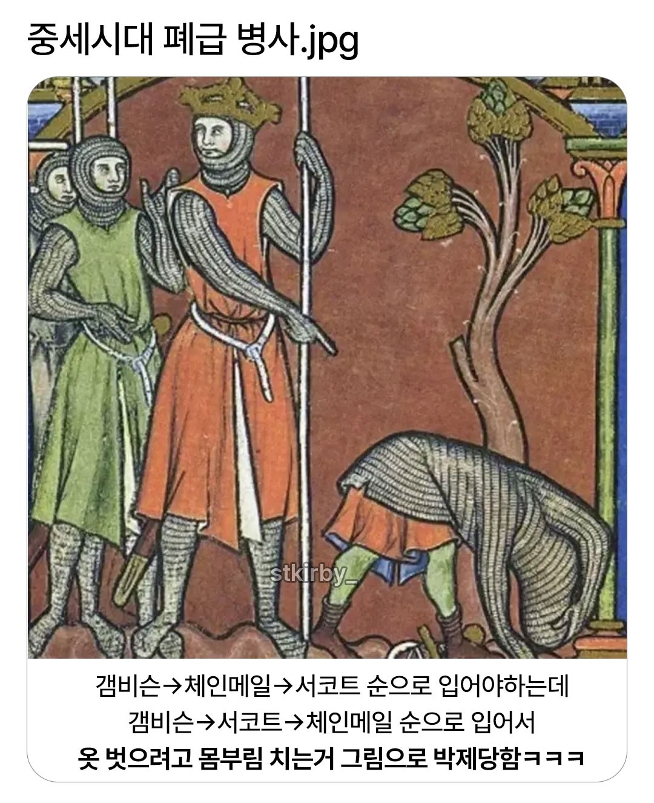

중세시대 폐급 병사.jpg
댓글

근데 아무리봐도 이새끼 뭐하냐? 같은 구도라
• 성경 속 장면: 구약성서의 사무엘상 에피소드로, 블레셋의 거인 장수 골리앗과 싸우러 가기 전, 다윗(David)이 사울 왕이 준 갑옷이 너무 무겁고 익숙하지 않아 벗어버리는(혹은 갑옷을 거부하는) 장면을 당시 13세기 프랑스 기사의 복장 스타일로 각색하여 그린 것입니다.
• 오른쪽 아래에서 허리를 숙이고 있는 인물은 갑옷을 잘못 입어서 고생하는 것이 아니라, 몸에 맞지 않거나 거추장스러운 무장/옷을 벗어 내려놓는 동작을 표현한 것입니다.
라고 한다
그치만 서코트가 안에있는걸
갑옷이 너무 무거워서 못입겠습니다!!!
야 이새끼 맞선임 누구냐?
구라)팩트다
머리 간지러워서 그런거 아님?
병신)새끼다

팩트) 내는 이딴거 못입겠다며 벗고 돌팔매질하러 가는 다윗의 탈의짤이다
제목부터 설명까지 맞는게 없네
중세 아님, 폐급병사 아님, 다윗이 갑옷 벗고 싸우러 나가는걸 ㅅㅂ ㅋㅋ
신성로마제국형 그림 ㄷㄷ
쨋든 거꾸로 입은거 맞죠?
안도와주고 뭐하노
팩트)배고프다
팩트)구라다